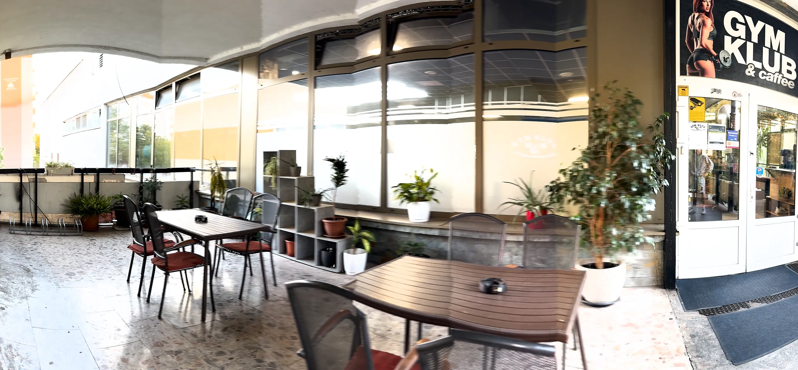
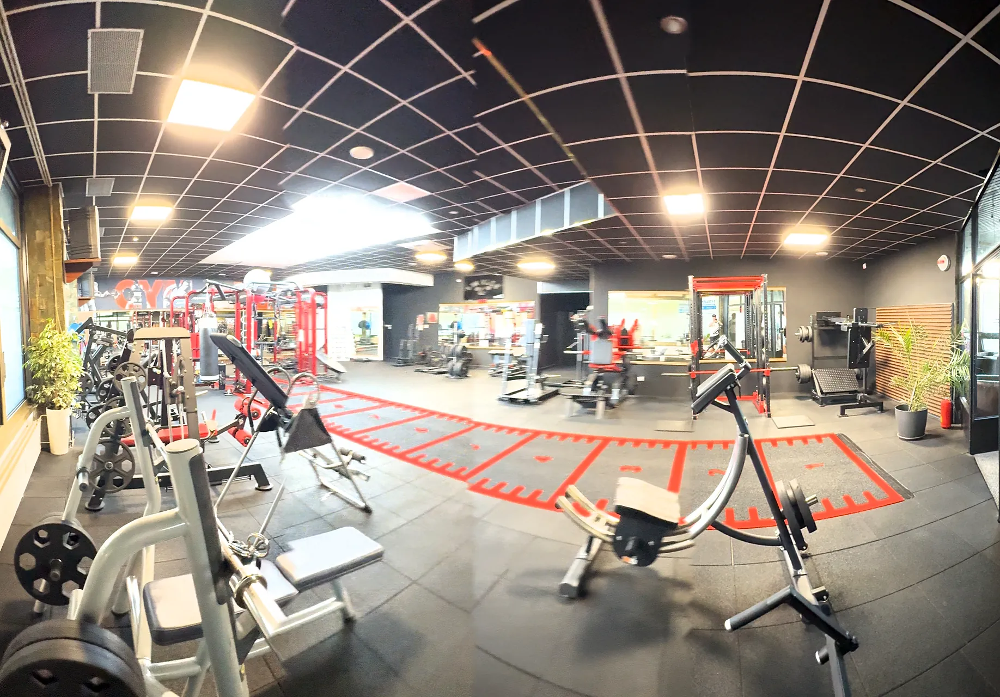

Prehliadka · Výstavná 6, Nitra
Celé fitko, priestor po priestore
Osem priestorov v poradí, ako nimi prejdete od vchodu. Skutočné fotky prevádzky; ťuknutím ich zväčšíte, panorámy posuniete do strany.
01 / 08
Príchod a recepcia
Vchod je z krytej terasy Lipa Centra, dvere sú pod nápisom GYM KLUB & caffee. Hneď za nimi je recepcia s nápojmi a polička na obuv. Tu zaplatíte vstup.
- Recepcia
- Nápoje
- Polička na obuv


02 / 08
Hlavná sála
Najviac strojov na jednom mieste: viacstaničné kladkové veže, stroje so záťažou na jednotlivé partie, kotúčové jednoručky a zrkadlová stena.
- Kladkové veže
- Stroje na partie
- Kotúčové jednoručky
- Zrkadlová stena
03 / 08
Sála so strojmi
Druhá, svetlá sála s veľkými oknami: kladkové stroje, polohovateľné lavice, lavice so stojanmi na osi a stojan s pevnými činkami.
- Kladkové stroje
- Polohovateľné lavice
- Stojany na osi
- Pevné činky
04 / 08
Kardio
Rad bežeckých pásov Life Fitness pri oknách s výhľadom do zelene, eliptický a schodový trenažér. Hodí sa na rozcvičenie aj samostatný kardio tréning.
- Bežecké pásy Life Fitness
- Eliptický trenažér
- Schodový trenažér
- Spinningové bicykle
05 / 08
Voľné váhy
Stojany s jednoručkami pri zrkadlách, samostatný stojan s gumovými jednoručkami do 20 kg, lavice so stojanmi na osi, kotúče a lavica na bicepsy.
- Jednoručky pri zrkadlách
- Jednoručky do 20 kg
- Lavice so stojanmi
- Lavica na bicepsy
06 / 08
Funkčná zóna
Priestor na kondičný a funkčný tréning: šprintérska dráha na podlahe, rig Life Fitness so závesnými popruhmi a boxovacím vrecom, kettlebelly, medicinbaly a vzduchový bicykel.
- Šprintérska dráha
- Rig Life Fitness
- Závesné popruhy
- Kettlebelly
- Vzduchový bicykel



07 / 08
Tatami
Samostatná miestnosť bez strojov: podložky, zrkadlová stena, švédska rebrina a závesné popruhy.
- Podložky
- Zrkadlová stena
- Švédska rebrina
- Závesné popruhy


08 / 08
Sála Panda Fight Club
Samostatná sála klubu Panda Fight Club s veľkou plochou tatami, boxovacími vrecami a hrazdami. Trénuje sa tu MMA, Luta Livre a Jiu Jitsu.
- Tatami
- Boxovacie vrecia
- Hrazdy
Fotky sály: gymklub.sk


Zázemie
Šatne, sprchy a recepcia
- Recepcia hneď pri vchode: tu zaplatíte vstup a ukážete Upbalansea alebo MultiSport.
- Šatne a sprchy. Doplniť: fotky šatní a spŕch; skrinky, či treba vlastný zámok
- Klimatizácia v celom fitku.

GYM KLUB · Výstavná 6, Nitra
Príďte si to prejsť naživo
Na samostatný tréning sa netreba objednávať. Stačí prísť počas otváracích hodín s čistou obuvou, uterákom a vodou.